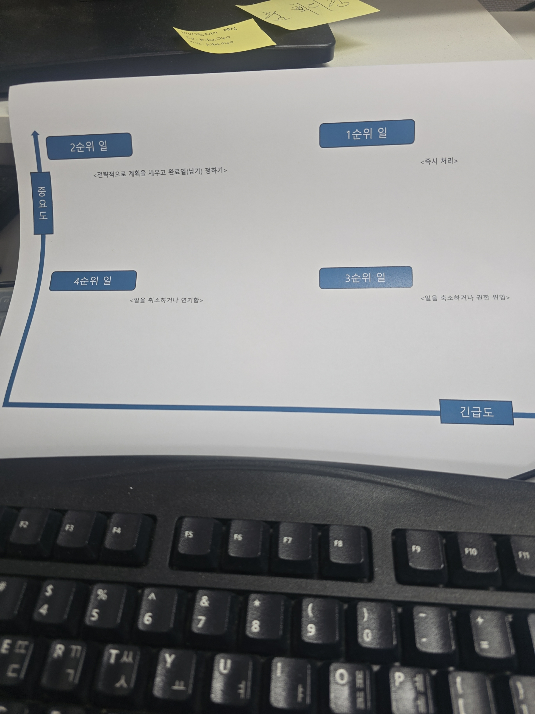

[자동화] 엑셀 현황판 - 구글 스프레드시트 자동 동기화
팀별 엑셀 데이터를 구글 스프레드시트 현황판으로 매일 자동 업데이트하는 체계 검토.
KIBA 요구사항과 quali-fit 프로젝트 진행을 하나의 보드에서 함께 봅니다. 카드를 누르면 의견을 남길 수 있습니다.
KIBA 요구사항과 quali-fit 프로젝트 과업을 한 보드에 모았습니다. quali-fit 태그가 붙은 카드는 직원 추천 도구(원본 저장소 bookseal/quali-fit) 작업입니다. 카드를 누르면 의견 메모창이 열리고, 적은 의견은 GitHub 이슈로 전달됩니다.
팀별 엑셀 데이터를 구글 스프레드시트 현황판으로 매일 자동 업데이트하는 체계 검토.
최신 가이드라인 PDF와 인건비 기준을 수집하고 계산 로직 반영 방식을 설계.
견적서 파일 분류, 이메일 견적 요청 감지, 유사 실적 자동 추출 흐름 정리.
저장할 때 백업본을 자동으로 남기고, 두 사람이 동시에 고쳐도 안 꼬이게.
방향만 정해 둔 단계입니다. 시점은 검토 중.
보유 인력 40명의 자격증, 학력, 경력을 대조해 등록 요건 충족 여부를 확인.
정기 회의, STT 회의록, 판단 기준 매뉴얼화를 통해 의사결정 간극을 줄이는 체계 수립.
원장님·관계자가 진행 상황을 쉽게 보도록 정리하는 중.
한 파일이 커져서, 화면 단위로 정리하는 작업.
직급 순서대로, 본부별로, 전공 범주별로 정리해서 표시.
매핑 자료를 A3 인쇄용 엑셀로 저장.
업무를 고르면 적합한 직원을 점수와 근거로 추천.
bookseal/quali-fit 저장소
업무에 맞는 직원을 이유와 함께 추천하는 사내 웹 도구의 원본 코드 저장소입니다.
quali-fit 진행 상황 보기
원본 프로젝트의 주차별 진행 상황과 앞으로의 계획을 확인합니다.
중요도와 긴급도를 기준으로 과업을 1~4순위로 나눠 판단합니다. 1순위는 즉시 처리, 2순위는 전략적으로 계획을 세우고 완료일을 정하기, 3순위는 일을 축소하거나 권한 위임, 4순위는 취소하거나 연기합니다.

2026년 6월 16일 원장님 미팅 요구사항을 5개 GitHub Issue로 등록했습니다.
`ASK`와 `Todo` 폴더는 `feed-mina/kiba_2026`에서 관리하고, 내부 원문 문서가 있는 `docs` 폴더는 Git 추적에서 제외했습니다.
`Todo/` 폴더의 기록을 자동으로 반영합니다. 마지막 갱신: 2026-06-17 07:29
2026-06-17 · 8/38 완료
2026-06-17 · 0/12 완료
2026-06-16 · 0/15 완료
아래 내용은 bookseal/quali-fit Pages에서 보이는 진행 상황입니다. 위 통합 보드에 이미 카드로 올라와 있으며, 여기서는 원본 맥락을 함께 봅니다.
안전 저장 & 자동 백업 · 로그인 → 여러 회사 함께 쓰기
안내 문서 · 페이지 정리 · 화면별 코드 분리
조직도+학력 보기 · 엑셀 인쇄 · 직원 추천
| 버전 | 무엇이 좋아졌나 | 완성한 날 |
|---|---|---|
| 0.0.1~0.0.5 | 기초 만들기, 자료 6종 입력·조회 | 5월 23~27일 |
| 0.0.7 | 이유까지 설명하는 직원 추천 | 5월 27일 |
| 0.0.9 | 업무–자격증 매핑 표 편집기 | 6월 2일 |
| 0.0.11 | 업무 코드 표기 규칙 통일 | 6월 8일 |
| 0.0.12 | 매핑 자료 내보내기 | 6월 9일 |
| 0.0.13 | 인쇄용 엑셀 · 조직도 · 학력 보기 | 6월 11~15일 |
| 0.1.0 | 안내 문서 · 진행 페이지 | 6월 16일 |
문서 원문은 GitHub에 저장하지 않고 비공개 R2 저장소에 보관됩니다. GitHub Issue에는 업로드 기록만 남습니다.